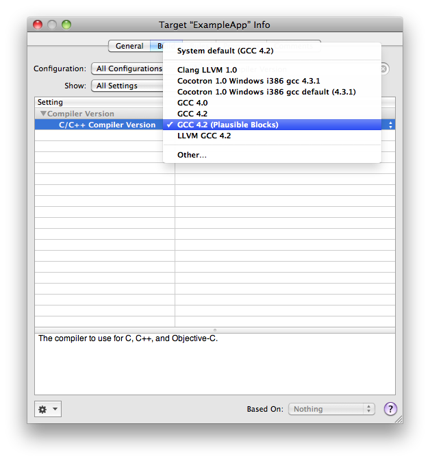

Blocks for iPhoneOS 3.0 and Mac OS X 10.5
Introduction
Update Sept 3rd 2009: Check out our more recent posts on PLBlocks.
If you’ve been following the wide variety of developer features planned for Snow Leopard, you may have noticed Apple’s introduction of Blocks, which add [closures](http://en.wikipedia.org/wiki/Closure_(computer_science)) to C and Objective-C, along with preliminary support for C++.
Blocks are a great addition to Objective-C, but unfortunately, are only available in Mac OS X 10.6. We have a quite a bit of code that could be greatly simplified using blocks, and so I decided to spend some time back-porting block support to iPhoneOS 3.0 and Mac OS X 10.5.
The result, Plausible Blocks, provides a drop-in runtime and Xcode compiler for using blocks in your iPhone and Mac OS X 10.5 applications, based on Apple’s Snow Leopard blocks runtime and compiler support.
Closures are not a new idea — originally conceived nearly 40 years ago, they’re a staple of many languages, from Lisp to JavaScript. If you’ve used a functional language (or a language that borrowed some ideas from one), chances are very good that you’ve made use of closures:
Ruby
books.each { |book| puts (library.to_s + ': ' + book.title) }
JavaScript
function setClickMessage (button, message) {
button.addEventListener("click", function() {
/* This is a closure */
alert(message);
}, false);
}
Scala
def findBooks (title:String): Seq[Book] = books.filter { book =>
/* This is a closure */
book.title == title
}
C and Objective-C Blocks
NSArray *result = [values mapConcurrent: ^(id value) {
/* Execute closure concurrently on available CPUs, collecting the results */
return ExpensiveComputation(value);
}];
Closures are well suited to modeling a wide variety of higher-level programming constructs, and in doing so, can greatly simplify your code and enable functionality that would simply be too cumbersome to implement any other way. For some additional information on blocks, and why they’re interesting, I’d suggest reading Mike Ash’s great Friday Q&A on Blocks, and my own Using Blocks post, which includes some sample code to get you started.
Download
The initial beta of Plausible Blocks is available for Leopard and Snow Leopard:
- Leopard: plblocks-1.0-beta1-leopard.dmg
- Snow Leopard: plblocks-1.0-beta1-snowleopard.dmg
- Project page: http://code.google.com/p/plblocks/
This beta release is provided for developer testing and experimentation, and should not be used for production software prior to further testing and review. Plausible Blocks supports targeting Mac OS X 10.5 (PPC, i386, x86-64), iPhone OS 3.0 (armv6), and iPhoneSimulator 3.0 (i386). Garbage collection and Mac OS X 10.4 are currently unsupported, and the SDK requires an Intel Mac.
The Plausible Blocks runtime makes use of custom, prefixed symbol names to avoid any binary conflicts that could occur should Apple add block support to iPhone OS, or when running your binaries on 10.6. The provided compilers are based directly on the Apple standard, stable compiler versions as shipped with the Mac OS X and iPhone SDKs.
Installation & Use
Plausible Blocks is composed of two pieces:
- Plausible Blocks SDK: Supplies custom compilers for use in Xcode.
- PLBlocks Runtime: A runtime library required by all applications making use of Plausible Blocks.
To install the SDK, simply install the included “Plausible Blocks SDK” package. Once installed, an additional “GCC 4.2 (Plausible Blocks)” compiler will be available for selection in your Xcode project and targets. To build with the new compiler, simply select in either your project’s build settings, or on a per-target basis:

In addition to the SDK, you’ll need to include the PLBlocks runtime framework in your application. It is provided as an embeddable framework for Mac OS X, and as a static framework for iPhone applications.
To include in your project:
- Copy the Mac OS X or iPhone PLBlocks.framework to your project directory
- Within Xcode, select “Add -> Existing frameworks” and add the copied PLBlocks.framework to your project.
- Ensure that PLBlocks.framework has been added to your targets “Link Binary With Libraries” section.
- (Mac OS X Only) Add a new “Copy Files” build phase to copy PLBlocks.framework to your application’s “Framework” directory.
- Set the project, or a specific target, to use the “GCC 4.2 (Plausible Blocks)” compiler.
Development
The full PLBlocks source code is available from the PLBlocks project page. If you’d like to contribute to the SDK, runtime, or simply discuss programming with blocks, please consider joining the development list at: http://groups.google.com/group/plblocks-devel
To build PLBlocks, select one of the following targets:
- Disk Image: Builds entire project and generates a distribution DMG.
- Package SDK: Builds SDK package, including all compilers, and Xcode plugins
- Runtimes: Builds all runtimes
The project should build on Mac OS X 10.5 and 10.6. In addition to Xcode 3.1.3 or 3.2, the iPhone 3.0 SDK is required.
Building the full SDK, including compilers, may take an extraordinarily long time. Unless you are experimenting with the compiler toolchain — or you are the type to enjoy watching paint dry — building only the Runtime targets during development is highly recommended.
The Plausible Blog
Latest news and musings from the co-op.
Follow us: @plausiblelabs
Recent Articles
- PLCrashReporter Stewardship Moving to Microsoft September 12, 2019
- A New Home for VoodooPad December 14, 2017
- PLRelational: Query Optimization and Execution October 3, 2017
- Let's Build with PLRelational, Part 2 September 28, 2017
- Let's Build with PLRelational, Part 1 September 18, 2017